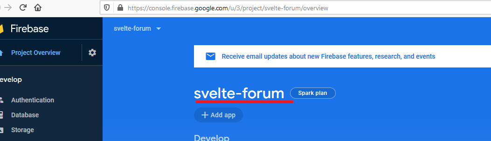

Sapper (Svelte) Forum
Video link: https://youtu.be/_GnSUpDZSIE
Git Repository: https://github.com/Ashot72/sapper-svelte-forum
Svelte https://svelte.dev/ is an alternative to web frameworks like React, Vue and Angular. Like those, Svelte can be used to build entire web apps. It can also be used to create custom elements that can be used
in existing web apps implemented with other frameworks.
React and Vue use a virtual DOM to optimize rendering changes. When components re-render, framework builds a new version of the DOM in memory and then compares it to the
previous version. Only the differences are applied to the actual DOM. While this is faster than updating everything in the actual DOM, it does take time to build a virtual DOM and compare it to the
previous one.
Svelte is a radical new approach to building user interfaces. It shifts the work into a compile step that happens when you build you app as opposed to React and Vue frameworks where the bulk of
the work is done in the browser.
Svelte is a compiler not a framework. The idea behind frameworks like React, Angular or Vue is that you write some modern JavaScript code within the rules of the framework and you ship that code
along with the framework to your users and the magic happens in the browser. The idea behind Svelte is that you do not ship your code in a framework but you write a code using a certain syntax
and the Svelte is a tool that runs over your code and generates pure vanilla JavaScript code which is highly optimized and which contains a bunch of instructions which will basically make the
things happen in the browser. What you ship to your users is only that code so you do not ship an extra framework but the code which is generated by Svelte using the Svelte syntax.
So, Svelte is basically a tool to compile components down at the build step, allowing you to load a single bundle.js on your page to render your app. Svelte works on real DOM, no virtual DOM.
Reducing the amount of the code you have to write is an explicit goal of Svelte. For example, a React component is typically around 40% larger than its Svelte equivalent.
Sapper https://sapper.svelte.dev/ is an application framework powered by Svelte.
Svelte team developed also released another package called Sapper which is closely connected to Svelte.
If you are familiar with Next.js for React, the framework built on top of React, or Nuxt.js for Vue, it is the same idea with one major difference – better performance.
Sapper takes care of all the heavy lifting including things like Server Rendering, Routing, Code splitting, Progressive web app by default, prefetching of routes, testing etc.
I built a Sapper (Svelte) forum which I also built with Vue https://github.com/Ashot72/Vue2Forum and Nuxt.js https://github.com/Ashot72/Nuxt2Forum. Before building a
Sapper/Svelte application you should understand some options.
SSR (Server-Side Rendering) with Sapper
Application is dynamically rendered on the server and after the first load the application turns into spa (Single Page Application). This is great for Search Engine Optimization (SEO).
You need Node.js server to run the app.
Static with Sapper
You do not actually need an Express server, instead, apps can be hosted and served as static files, which allows them to be deployed to more hosting environments such as
Firebase Hosting or GitHub Pages. Static does not mean non-interactive – your Svelte components work exactly as they do normally, and you still get all the benefits of client-side
routing and prefetching
SPA (Single Page Application) with Svelte
You do not need to set up Sapper, you just build a Svelte application using a Svelte routing library such as svelte-routing.
Figure 1
I am running the app with npm run dev command on my local machine which requires Node.js. It is a server side rendered app.

Figure 2
npm run dev starts the app in development mode, and watches sources files for changes. The files are served from __sapper__/dev folder.
As the app does not actually need an Express server, we can host it on a static server such as Firebase Hosting.

Figure 3
I created svelte_forum Firebase project.
Figure 4
The application makes use of Firebase Realtime Database as a data source and Firebase Static Hosting to host the app.
Figure 5
We run npm run export command to generate a static version of the app. Both build and export folders are generated under __sapper__ folder.
Now, it is time to host the static version on Firebase.
Figure 6
First, we run firebase init command then select the Hosting option and click Enter.
Figure 7
We choose public directory as __sapper_/export. As we do not want to deploy it as a single page application, we type No. We do not want to overwrite the existing index.html file either.
The option also is No.
Figure 8
The last command is firebase deploy. You see the Hosting URL on the console to navigate to.
Figure 9
Actually, there is an alternative shorter URL that we are going to navigate.
Figure 10
The app hosted on Firebase looks similar to the one running on localhost (Figure 1) but the one on localhost is a fully server side rendered app while the one on
Firebase is the static version of the app.
Let's see the difference. Note, they both are connected to the same Firebase database.
Figure 11
Signing in to add a forum.
Figure 12
Adding a new forum.
Figure 13
If you go to localhost version of the app and refresh the page you will always see the newly generated Svelte forum.
Figure 14
Refresh the hosted one and 'Svelte ' forum disappeared.
Figure 15
Click one of the existing forums, say, SharePoint 2013 to navigate to topics page.
Figure 16
We are on topics page. Click breadcrumb Home link to navigate back to Forums page.
Figure 17
Surpassingly, Svelte forum is back.
What is the reason?
Figure 18
Sapper comes with routes folder and '.svelte ' components in it are mapped to paths in the URL which fit their file names.
Figure 19
For example, index will be reached on just our domain (https://svelte-forum.web.app). Other routes except for index use dynamic routes which we will be discussed below.
Figure 20
Note, we have topics/[forumId].svelte route with square brackets. This means that forumId (can be any name) is a dynamic parameter.
Figure 21
We are on topics page ending with -LEP35jzM4gEKsrShvlg
Figure 22
There is no -LEP35jzM4gEKsrShvlg file or folder in topics folder. Instead, it simply reaches [forumId] dynamic file and square brackets is a special syntax that sapper understands if you visit
a path like forumId.
Figure 23
You may notice that there is another route posts/[forumId]/[topicId].svelte. In this case we not only have a dynamic file like [forumId].svelte above but also dynamic folder [forumId] and
dynamic file [topicId].svelte.
Figure 24
On topics page we already saw forumId dynamic part which is /-LEP35jzM4gEKsrShvlg coming from Firebase database.
Figure 25
When you navigate further to posts page you will see two dynamic parts in the URL. First one is -LEP35jzM4gEKsrShvlg forumId which maps to [forumId] folder in the route
and the second one is -LEPJqSVSjzh_zgw9EyC topicId which maps to [topicId].svelte file.
Figure 26
They are dynamic because when you navigate to another post under Vue.js forum you will see different forumId and topicId.
Figure 27
If you open topics/[forumId].svelte file you will see preload function in which we can extract dynamic parameters. Preload is a specific function name sapper is looking for
and in there we can do any initialization work we want to do and if we return promise here then the rendering of the page itself will be deferred until the promise is resolved.
Figure 28
Whatever we return in the preload function it is passed into script. We returned an object with forumId and postId in the preload function therefore we expect an object with those properties
which will be automatically extracted for us and we can access both forumId and topicId. So, preload is used for preloading and you do not need it if you are not preloading anything.
Figure 29
If you need preloading then you need special context=module script which runs before the component is created then you return data you need to use it in the component as we already discussed.
Figure 30
You can also load on the client by adding onMount lifecycle function and load it from Svelte.
Figure 31
Let's add console.log in preload function topics preloading! and in the script tag topics executing!
Figure 32
The third console.log inside onMount function topics onMount!.
Figure 33
I refreshed topics page and see topics executing! and topics onMount! printed. Pay attention to the order; first, topics executing! then topics onMount! which makes sense.
Figure 34
In the server-side log, I see topics preloading! and topics executing! as preloading runs before the actual component is rendered.
The onMount happens in the browser, not on the server. In the server-side log, you do not see topics onMount!.
topics executing! in the normal script tag Is printed both in the server and client log. Whatever you put in the script tag it runs on both the client and the server.
It happens on purpose because you need to hydrate the prerendered DOM which is shipped form the server to the client. You attach your client-side app to that and therefore it re-executes.
You can fetch onMount only if you want to ensure that you are not prefetching data on the server but you are doing on the client. Admin dashboard could be the case where you do not need
search engine optimization. It is worth mentioning that preload does not just run on the server it actually can run on both the server and the client.
Figure 35
Let's add the same logs to forums page – forums preloading! and forums executing!
Figure 36
The last one inside forums onMount!

Figure 37
Similar to topics we see forums executing! and forums preloading!
Figure 38
forums preloading! and forums executing! in the server-side log.
You do not see forums preloading! in the client log file because sapper and svelte are smart enough as they detected that the page is already finished rendering its component
and it does not unnecessarily run this function again.
Figure 39
We navigated to topics page and you see that topics preloading! is printed this time and nothing new in the server-side log.
sapper prerenders the first page but thereafter you have a single page application and all subsequent rendering happens in the browser giving you the instant feeling.
Figure 40
If I reload topics page you will see topics executing! and topics onMount! in the browser log.
Figure 41
topic preloading! and topics executing! in the server-side log.
The reason is that when I reload the page, I leave the single page application and I send a new request and therefore it is the first page now.
Sapper takes it to the next level and does not preload data when you click on a link but instead when you hover over it.
Figure 42
For the links (<a> element) under Name column we specified rel=prefetch attribute.
Figure 43
I hovered over SharePoint 2013 link (did not click) and see the network request which are the topics of the SharePoint 2013 forum.
Figure 44
Yes, they are the topics in Firebase database.
Figure 45
When I hovered over the link then topics preloading! was printed in the browser log.
Figure 46
Actually, topics preload function has been called while I hovered over the link. Sapper prepared the page that we are about to load before we actually went there.
So, once you click it is super-fast because everything has been prepared and loaded behind the scenes so to say. Once you click, all it needs to do is to update the DOM.
With npm run export command we already mentioned we can prepare our application by visiting every route during the build time and prerender it in the generated __sapper__/export folder.
Figure 47
The command automatically checks all the links (<a> element) it finds in our dynamic routes, captures any data served by the app
and creates folders and files in the export folder. Now, we have the static app in the export folder.

Figure 48
If you look at the main index.html file (forums page) you will notice the forums page content generated which will be server-side rendered on a static hosting.

Figure 49
If you view the page source (view source) you see the server side rendered content.
Figure 50
'Svelte' forum is not there as we created the forum after we generated the static content. When you refresh the page, you preload the content and 'svelte' forum could not be found but when
you navigate to topics page then go back to forums page you see it as this time the forums page is rendered as SPA (single page application). The same is true with topics and posts pages.
Figure 51
The breadcrumb of topics and posts pages is generated in onMount function.
Figure 52
We fetch data on the client which means that breadcrumb will never be preloaded and server side rendered. That is the reason that you will notice a subtle delay in breadcrumb rendering.
Figure 53
Here are the dynamic routes generated from Firebase database.
Figure 54
As an anonymous user you are allowed to navigate to forums, topics and posts. For the other actions such as Add Forum, Reply Posts etc. you have to sign in or sign up.
We user Firebase Authentication In order to authenticate users.

Figure 55
Currently there are three registered users.
Figure 56
After a user is signed in or signed up, we just save the access token and other info in the local storage. Expiration period is 3600 seconds which is 1 hour and when the access token is about to expire,
we generate a new access token (idToken) by means of the refresh token. Note, that we keep the info in the client side. What if we want to authenticate a user on the server side when we preload forums or topics?
In that case you should use sapper session middleware such as express-session in your app/server.js in order to maintain user sessions or do anything involving authentication. In this case we can not use static
hosting as Node.js (express) is required to host the app.
Figure 57
The application is built with Svelte bootstrap Layout and components.
Figure 58
Surprisingly, I am getting an error when trying to open the page in Microsoft Edge browser.
Figure 59
For the same reason our app does not function properly in Microsoft Edge browser.
Figure 60
Forums page mobile view.
Figure 61
Topics page mobile view.
Figure 62
Posts page mobile view.
Figure 63
Sign Up dialog mobile view.